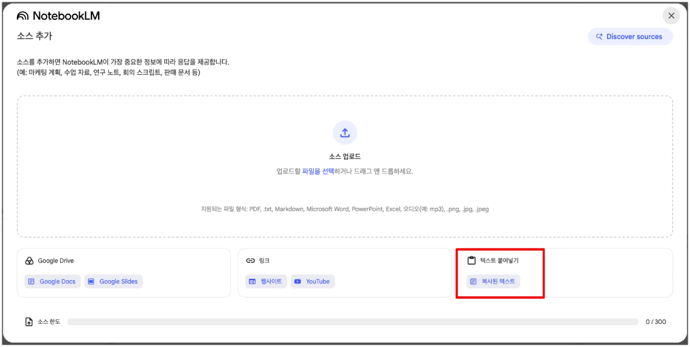

Gemini Notebook & 노코드 에이전트 구축
사내 소스 그라운딩 기반의 5종 멀티모달 콘텐츠 생성부터 Deep Research 심층 탐색,
그리고 코딩 없이 Agent Designer로 현업 비즈니스 워크플로우를 조립하는 체감형 실습입니다.
3대 소스 바인딩 및 인포그래픽, 팟캐스트, 슬라이드 5종 제작
다단계 자율 리서치 및 경쟁사 분석 심층 구조화 보고서
CRAFT 코치 에이전트 & 소셜 미디어 마케팅 멀티 에이전트
4단계 시장 분석 워크플로우 실행 및 ROI 성과 지표
팀 도서관 소스 3종 (Gemini · Workspace · Cloud)
신뢰할 수 있는 소스 문서를 모아 100% 인용 기반의 팀 도서관을 구성합니다.
2M 멀티모달 컨텍스트, Deep Research, Model Armor 보안 방화벽, 사내 RAG 검색
Gemini Side Panel 교차 참조, Docs/Sheets 생성 지원, Google Vids 비디오 제작, CSE 종단간 암호화
Vertex AI 150+ 모델, A2A 멀티 에이전트, Cloud TPU 연산 최적화, BigQuery 대화형 분석
실습 1. 3종 스타일 인포그래픽 (기본 · 스케치 · 신문)
소스를 바인딩하고 프롬프트로 스타일을 지정하여 맞춤형 인포그래픽을 생성합니다.
- Google AI 서비스 텍스트 3종을 노트북 소스로 추가
- 우측 Studio ➔ Infographic (⋮) ➔ Customize 클릭
- Workspace 소스 ➔ 기본 개요 스타일 생성
- Gemini 소스 ➔ 스케치노트 스타일 생성
- Cloud 소스 ➔ 신문 1면 스타일 생성

실습 2. Audio Overview (AI 2인 대담 팟캐스트)
소스 문서 전체를 AI 진행자 2인의 팟캐스트 대담 형식으로 자동 요약합니다.
- 노트북 우측 오디오 개요(Audio Overview) 패널 열기
- 생성하기(Generate) 버튼 클릭 (소요 시간: 약 2~4분)
- 완료 후 실시간 스트리밍 청취 또는 MP3 파일 다운로드
- Customize 옵션으로 대화의 집중 주제 지정 가능
- 출퇴근/이동 중 학습: 이어폰으로 사내 핵심 신기술 문서 청취
- 온보딩 브리핑: 신규 입사자에게 팀 프로젝트 팟캐스트 배포
- 경영진 요약: 긴 사업계획서를 5분 오디오 브리핑으로 전달

실습 3. Slide Deck (시네마틱 비주얼 슬라이드)
제품 이미지만으로 영화 예고편 스타일의 세련된 슬라이드를 자동 완성합니다.
- homestyle.zip 압축 해제 후 이미지 4장을 소스로 업로드
- 브랜드 스토리 텍스트를 story 소스로 추가
- 슬라이드 자료 ➔ Customize 옵션 선택
- 텍스트 배제 지시어를 입력하여 비주얼 중심 슬라이드 렌더링

실습 4. 설명서 및 리포트 3종 자동 완성
복잡한 기술 문서를 브리핑 문서, 스터디 가이드, FAQ 문서로 구조화하여 도출합니다.
경영진 보고용 핵심 요약, 배경, 주요 과제, 기대효과를 1페이지로 정돈
학습 목표, 주요 개념 용어 사전, 퀴즈 및 연습 문제로 구성된 교육 자료
실무자가 가질 법한 예상 질문 10가지와 원문 근거 기반 명확한 해답 정리
실습 5. Canvas 튜토리얼 비디오 제작
Notebook 분석 내용을 바탕으로 장면별 나레이션과 연출이 포함된 비디오를 기획합니다.
- Notebook에서 도출한 핵심 팁을 Canvas로 내보내기
- 60초 분량 숏폼 비디오 스크립트 작성 프롬프트 실행
- 장면(Scene)별 화면 구성, 자막 텍스트, 보이스오버 대본 분할
- Google Vids 또는 Veo 프롬프트로 전환하여 영상 렌더링
Deep Research: 다단계 자율 추론 & 웹 심층 탐색
단일 검색을 넘어 복합 질의를 하위 과제로 분해하고 수십 회 자율 탐색하여 종합합니다.
- 1. 질문 분해: 복합 문제를 5~10개의 세부 검색 키워드로 분할
- 2. 다단계 탐색: 최대 160+ 웹페이지를 자율적으로 크롤링 및 수집
- 3. 교차 검증: 상반된 통계와 주장을 비교하여 신뢰도 필터링
- 4. 종합 보고서: 각주 인용이 완비된 다면 분석 보고서 작성
실전 Deep Research: 글로벌 AI 에이전트 시장 분석
엔터프라이즈 AI 에이전트 시장 현황, 주요 벤더별 강약점, 2026 로드맵을 종합 분석합니다.
- Executive Summary: 3줄 핵심 요약 및 시사점
- Market Overview: 2026년 시장 규모 통계 데이터
- Vendor Comparison Table: 기능/보안/비용 다차원 비교
- Case Studies: 금융, 헬스케어, 제조 도입 실사례
- Citations: 40개 이상의 공식 링크 및 논문 출처
엔터프라이즈 AI 에이전트 5대 아키타입 (Archetypes)
단순 검색 에이전트부터 자율 추론 및 멀티 에이전트 협업까지 5단계로 분류합니다.
사내 지식 RAG 및 웹 검색 기반 정보 검색 및 인용 요약
API, DB, 계산기 등 외부 도구를 자율적으로 호출 및 실행
단계별 분기 조건(If-Else)과 순차 프로세스를 자동 실행
목표를 자율 분해하고 실행 계획을 동적으로 수정하며 달성
역할별 전문 에이전트들이 협력 및 교차 검증하는 시스템
Agent Designer: 노코드 맞춤 에이전트 제작 스튜디오
코딩 없이 자연어 지시어와 도구 바인딩만으로 현업 맞춤 에이전트를 제작합니다.
에이전트의 역할, 전문성, 말투, 금지 사항(Guardrails)을 자연어로 명확히 규정
사내 매뉴얼, Google Drive 폴더, 웹 URL을 에이전트 전용 참조 문서로 지정
구글 검색, 코드 인터프리터, 사내 커넥터 도구를 활성화하여 실행력 부여
실습 1. CRAFT 프롬프트 코치 에이전트 제작
사용자의 모호한 요청을 C.R.A.F.T 5요소로 분석하여 완성형 프롬프트로 변환하는 코치입니다.
- Name: CRAFT Prompt Optimizer
- Description: 모호한 지시어를 엔터프라이즈 CRAFT 프롬프트로 리팩토링
- Instructions: 사용자가 질의를 입력하면 5단계 요소를 검토하고 누락된 맥락을 채워 최종 프롬프트 코드 블록을 제공할 것
실습 2. 소셜 미디어 게시물 멀티 생성 에이전트
단일 제품 정보를 채널별 특성에 맞춰 링크드인, 인스타그램, 블로그 카피로 동시 다변화합니다.
- LinkedIn: 전문적인 B2B 인사이트 톤, 비즈니스 가치 강조, 해시태그 3개
- Instagram: 감성적인 비주얼 중심 어조, 이모지 적극 활용, 줄바꿈 서식
- X (Twitter): 핵심 요약 280자 이내, 강렬한 후킹 문장
Workflow Agent: 노코드 비즈니스 프로세스 자동화
입력 조건 검증, 단계별 처리, 최종 승인까지 이어지는 파이프라인을 시각적으로 연결합니다.
사용자 입력 또는 웹훅 트리거 수신 후 필수 데이터 누락 여부 자동 검증
데이터 유형(정형/비정형) 및 심각도에 따라 서로 다른 전문 하위 태스크로 라우팅
하위 결과물을 종합하고 필요 시 담당자 승인(HITL)을 거쳐 최종 시스템에 반영
실습 3. 시장 분석 4단계 워크플로우 파이프라인
타깃 산업 키워드를 입력하면 4단계를 순차 실행하여 완성형 전략 기획서를 도출합니다.
실시간 웹 검색으로 최근 6개월 시장 뉴스 및 주요 기사 데이터 크롤링
시장 규모, 성장률, 주요 기업별 점유율 통계를 표 형식으로 추출
강점, 약점, 기회, 위협 요인을 4분면 매트릭스로 구조화
30-60-90일 단계별 시장 진입 우선순위 액션 아이템 제안
워크플로우 실행 결과: 완성형 전략 기획 보고서
정량 데이터 표, SWOT 매트릭스, 3단계 실행 로드맵이 완비된 최종 보고서입니다.
• 시장 성장률: CAGR 18.4% (2026-2030)
• 핵심 SWOT: 차세대 전고체 배터리 기술 확보(S) vs 초기 양산 수율(W)
• 30일 액션: 글로벌 배터리 제조사 파트너십 NDA 체결
• 60일 액션: 파일럿 라인 샘플 테스트 및 인증 획득
• 90일 액션: 북미/유럽 완성차 고객사 초도 물량 계약
- 재현성(Reproducibility): 동일한 템플릿으로 다른 산업군도 즉시 분석
- 오류 방지: 중간 단계 누락 없이 모든 분석 항목을 강제 이행
- 팀 표준화: 부서 내 모든 기획자의 보고서 품질 상향 평준화
Track 2 실습 성과: 지식 도서관 & 에이전틱 가치 실현
환각 없는 사내 지식 활용과 노코드 에이전트 구축으로 팀 생산성을 극대화했습니다.
인포그래픽, 팟캐스트, 슬라이드, 리포트 5종 멀티모달 자동 생성으로 팀 지식 공유 체계 구축
Deep Research 엔진으로 웹 전반을 다단계 탐색하여 신뢰도 높은 컨설팅 보고서 도출
CRAFT 코치, 소셜 미디어 멀티 에이전트, 4단계 시장 분석 워크플로우 즉시 현업 적용
Track 2 실습 완료 & 다음 트랙 이동
Gemini Notebook과 Agent Designer 노코드 에이전트 실습을 성공적으로 마쳤습니다.
사내 소스 그라운딩 기반 5종 멀티모달 자동화
수십 회 자율 추론을 통한 완성형 컨설팅 리포트
CRAFT 코치 및 소셜 미디어 마케팅 자동화